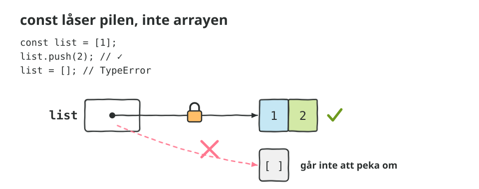
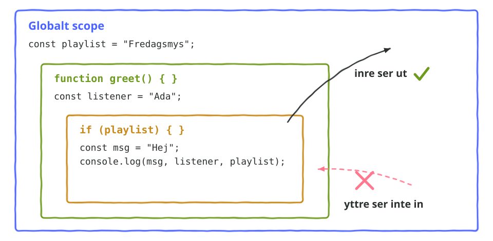

Scope
Del 4 av 4 · Mutable, immutable och scope
Allt händer i konsolen. Öppna DevTools (F12) och välj Console. Gissa vad som loggas innan du sparar.
- const låser pilen, inte arrayen.
pushgår,list = []går inte. - Globalt scope. Syns överallt.
- Funktionsscope. Det som skapas i en funktion stannar där.
- Blockscope.
letochconstlever mellan{och}. - var läcker. Därför använder vi det inte.
- Shadowing. Samma namn i ett inre scope.
- Scope-kedjan. Inre ser ut, yttre ser aldrig in.
- Extra: closure. Funktioner minns var de skapades.
- Extra: var och let i en loop.
Sedan: js/vad-loggas.js. Sex korta funktioner. Gissa först, kör sedan.
Skisser

